为了可以对以上增加的数据进行查询及统计或进行导入的工作，我们需要有一个管理的功能界面对以上的项目的基本信息进行维护管理，我们可以通过平台对这个项目的管理的功能进行设计。其完成后，项目的主数据的维护列表如下：
配置以上管理列表，用户需要掌握基本的SQL语法，即可以通过SQL实现对数据列表实现列表的过滤处理。
第一步：添加数据列表方案
【操作路径】
敏捷开发--》单据数据列表--》添加
进入单揣数据列表定义配置界面，如下所示：
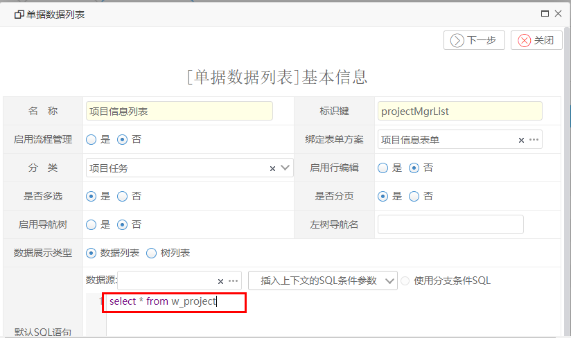
以上表单的几点说明：
启动流程管理：若设置是，则表示在管理列表中对流程展示及进行操作。
绑定表单方案：表示在列表中可以增加项目信息，展示的表单。
启用导航树：在列表的左边显示导航树
数据展示类型：若为数据列表，则数据以数据列表展示，若为树列表，则数据以树列表来展示
默认的SQL：表示列表进来后的加载的数据列表。
若数据来自其他库，需要建立其他数据源
查询的表名，一般为表单的标识键前缀加w_.
第二步：配置数据列表列列头
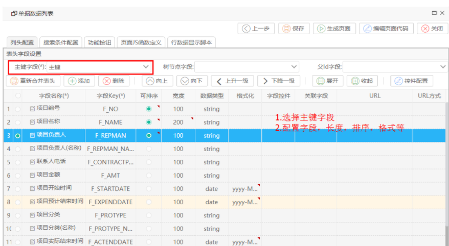
第三步：添加搜索条件配置
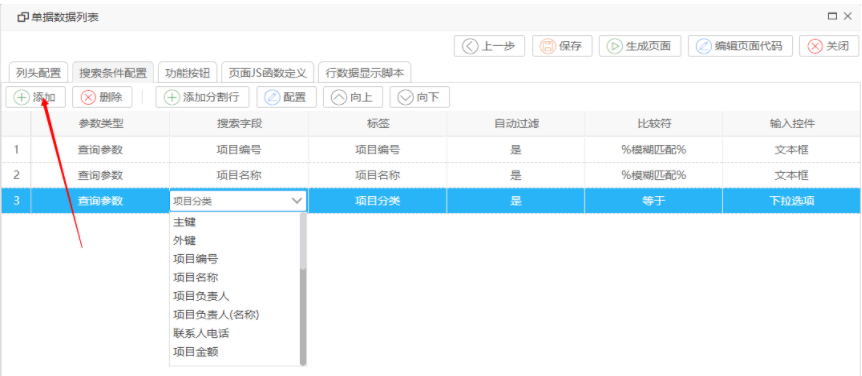
点工具栏上的【添加】在下面的搜索字段选择对应查询字段：
【说明】
若行中输入控件选择的是非文本控件，可以选择上面【配置】按钮对该行的输入控件进行配置。如下所示：
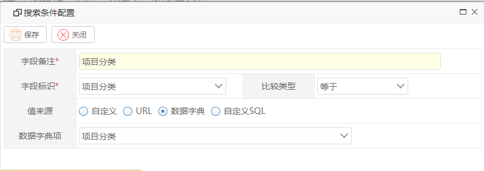
配置完成后，其主要生成以下界面：
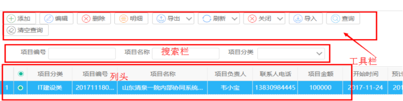
第四步：配置功能按钮
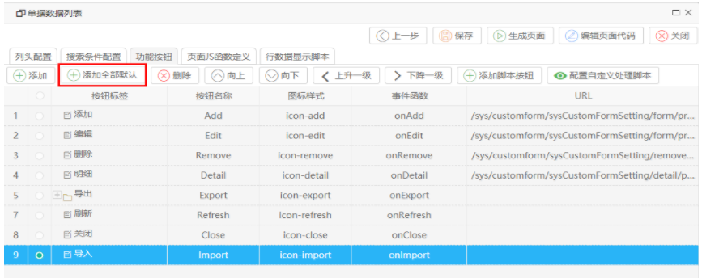
添加全部默认，然后删除不必要的按钮即可。
第五步：【保存】，再点【生成页面】
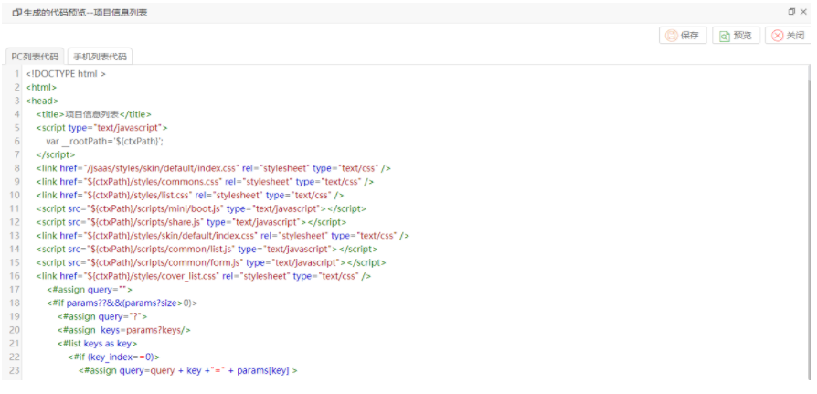
点击右上角【预览】按钮即可预览项目主数据列表。
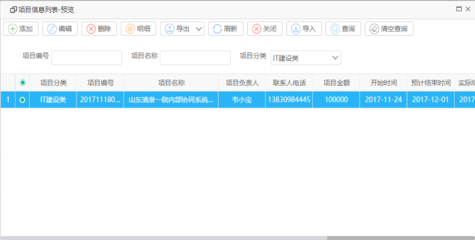
【扩展操作说明】
若以上列表中增加按分类树分类树展示项目列表，如下所示，我们可以通过配置自定义SQL生成左导航树菜单
只需要在以上第一步，选择【启用导航树】为是，同时在第二，添加自定义SQL，生成树菜单的数据，如我们通过以下SQL从数据字典中
获得项目的分类列表：

然后在弹出的sql编辑窗口编写返回的数据Sql，如下所示：
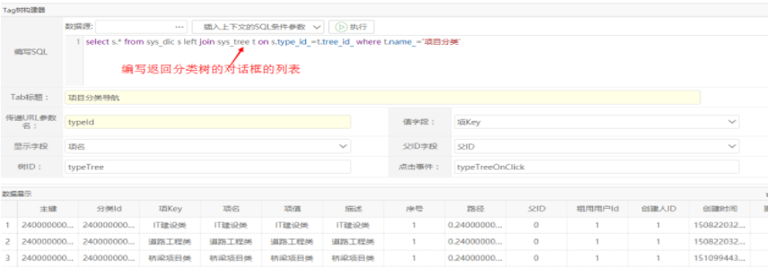
确定返回后，再点上面【保存】按钮，完成后再点【生成页面】即可。完成后，操作界面如下：
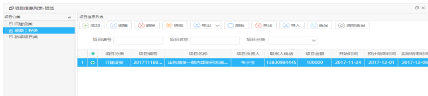
为了点击左边树分类，右边的数据自动过滤，注意我们在弹出的导航Sql中编写了一个参数typeId，它代表点击左边的树节点时传入的typeId值至右边的表格数据过滤。因此我们对第一步的SQL的修改为：
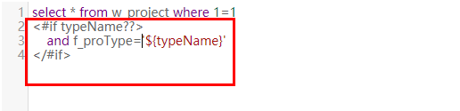
第六步：发布到子系统下的功能菜单
【操作步骤】
敏捷开发--》单据数据列表--》管理列表数据行操作列--》发布按钮，如下所示：
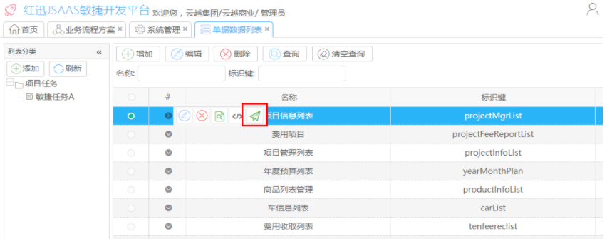
填写对应的操作按钮，即可完成该功能列表的菜单发布。如下所示：
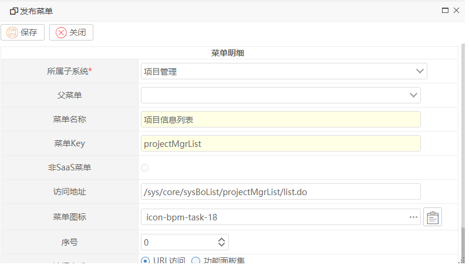
发布完成后的菜单 展示如下所示：
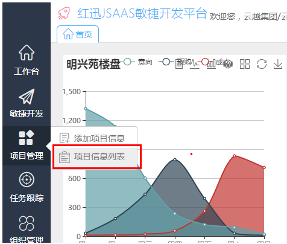
点击进入后，其展示的数据操作界面如下所示：
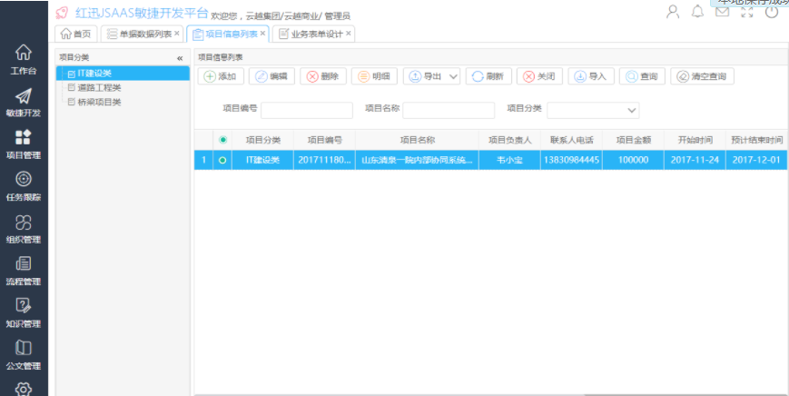
至此我们完成了对项目的主数据的界面的操作处理。